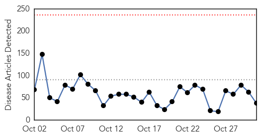
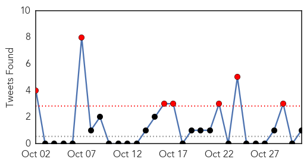

30 Day Trends
Web: 0 alerts, 0 warnings
Twitter: 3 alerts, 0 warnings
Top Articles:
- 0.997
- Rise in MERS cases prompts Saudi warning to residents
- 0.970
- County health departments across Oklahoma offer flu shots
- 0.935
- Calgary doctor urges mandatory flu shots for health care workers
- 0.934
- San Pablo: Doctors Medical Center offers drive-through flu shot clinic
- 0.927
- Every child in Lanarkshire offered flu vaccination
- 0.919
- Doctors bucking Lyme protocols
- 0.917
- Chicago Tribune
- 0.910
- The world windows to Thailand
- 0.898
- 9 in N.Y., 5 in valley
- 0.866
- One killed, 1 injured in crash of Virgin Galactic spacecraft -CNN, CNBC
- 0.866
- S.Africa's Harmony halts Kusasalethu operation to remove illegal miners
- 0.866
- Burkina Faso army colonel says president has left power- TV
- 0.832
- Belarus suspends pork export to Russia
- 0.820
- Imported raw materials suspected as source of ASFV genome in Belarusian meat products
- 0.796
- Parents urged to get youngsters vaccinated against flu
- 0.786
- Tuberculosis: Forgotten, but not quite gone — with video
- 0.748
- Medical researchers report four deaths due to Lyme carditis
- 0.685
- Branson's Virgin spaceship crashes, killing pilot
- 0.685
- Video: The cult of Kobane’s martyrs
- 0.685
- Army takes over as Burkina Faso leader steps down
- 0.685
- US judge rejects strict limits on Ebola nurse
- 0.685
- Hungary to suspend controversial Internet tax
- 0.682
- UN to aid SL after landslides
- 0.670
- It’s Victory for Kaci Hickox as Judge Rejects State Appeal ofMandatory Quarantine
- 0.639
- India: Anthrax outbreak prompts quarantine of Simdega district village
- 0.622
- Australia Hendra vaccinations reach quarter million
- 0.622
- Australia Hendra vaccinations reach quarter million
- 0.622
- Australia Hendra vaccinations reach quarter million
- 0.616
- 156 housewives live with HIV/AIDS
- 0.598
- Leprosy Still Occurs in the United States, CDC Reports
- 0.583
- Tell Ontario to ban medical tourism
- 0.574
- After polio, diphtheria poses a serious threat
- 0.556
- Ohio, Michigan on guard for fatal illness in deer herd
- 0.548
- CARE Staff Safe Amidst Heavy Fighting around Bentiu
- 0.540
- Palomar Student With Meningococcal Disease Out of Hospital
- 0.512
- Healthcare Operators Wants End To Healthical Tourism
- 0.511
- Bureau County Republican
- 0.507
- Sudan Vision Daily
Top Tweets:
- 0.548
- RT: Health care workers can transmit flu to patients, who may experience complications. Vaccinations protect you AND those aro…
Web/News Articles
Tweets
Article Locations

Article Confidences